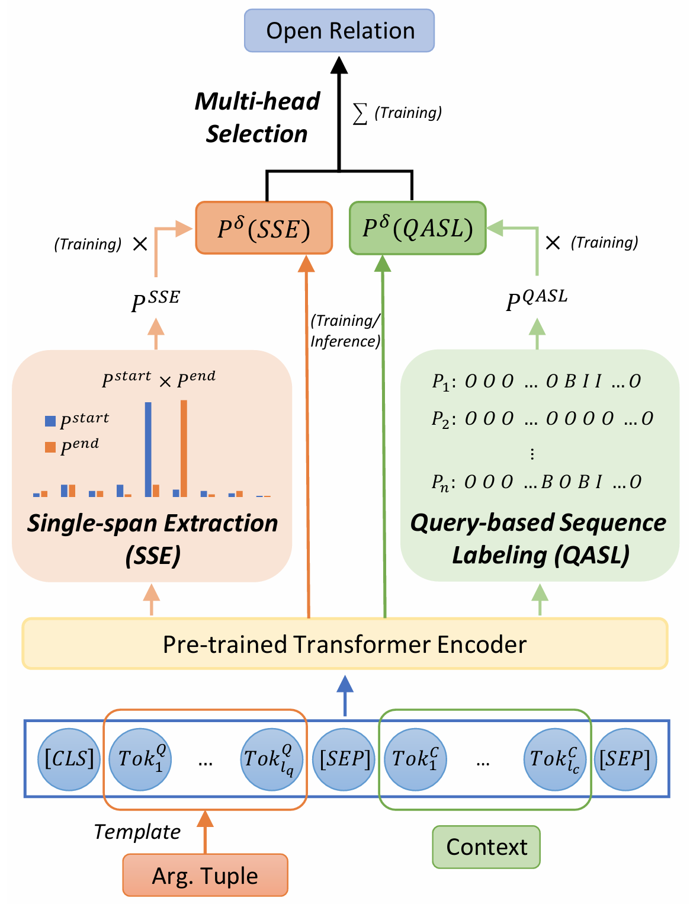
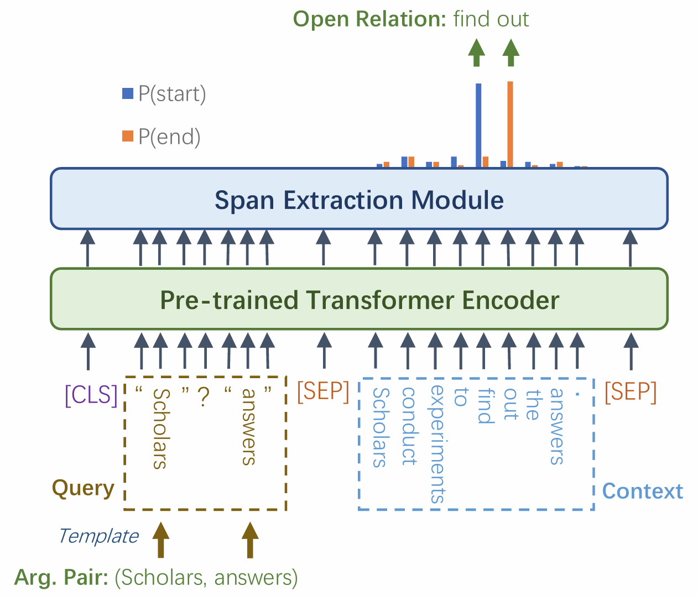
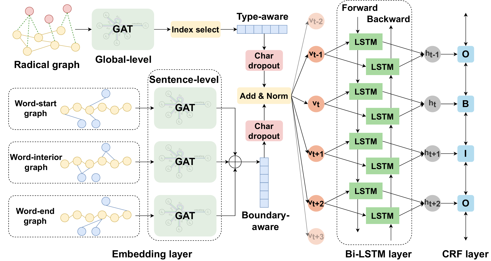
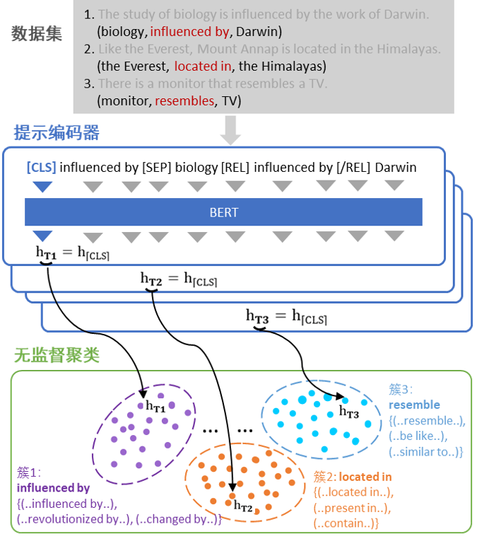

About
Experiences
 2023.09 – 2025.02
2023.09 – 2025.02
Research Assistant (FT) @ SoundLab, School of Creative Media, City University of Hong Kong
Generative AI in Sound.
Supervisor: Prof. Ryo Ikeshiro
 2020.09 – 2021.08
2020.09 – 2021.08
Research Intern & Software Engineer Intern @ Microsoft Software Technology Center Asia, Bing Multimedia Group (Beijing, China)
Academic research. Engineering: CVScreen, Table2Charts.
Supervisors: Wei Ji, Da-Wei Li, Daxin Jiang
2020.09 – 2024.06
Research Assistant @ Beijing Key Laboratory of Intelligent Telecommunication Software and Multimedia, BUPT
Supervisor: Prof. Bin Wu
2020.09 – 2022.06
Teaching Assistant @ Beijing Key Laboratory of Intelligent
Telecommunication Software and Multimedia, BUPT
Courses: Discrete Mathematics, Introduction to Data Science.
Supervisor: Prof. Bin
Wu
2022.10 – 2022.12
Supervisors: Dr. Haiqin Yang, Prof. Xiangyang Shen
Publications ( / )

Open Relation Extraction with Non-existent and Multi-span Relationships

Open Relation Extraction via Query-based Span Prediction

TsERL: Two-stage Enhancement of Radical and Lexicon for Chinese Medical Named Entity Recognition
Large Audio AI Models for Fixed-Media Electronics in "Prelude: To Listening"

Master's Dissertation: Open Relation Extraction and Canonicalization for Knowledge Graph Construction